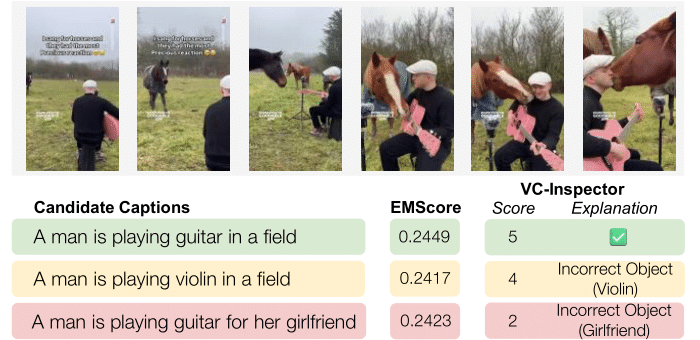
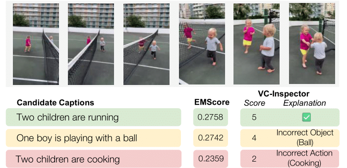
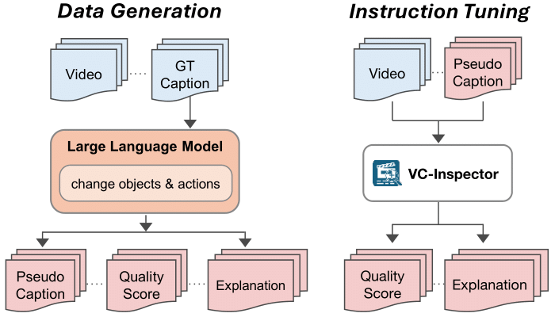
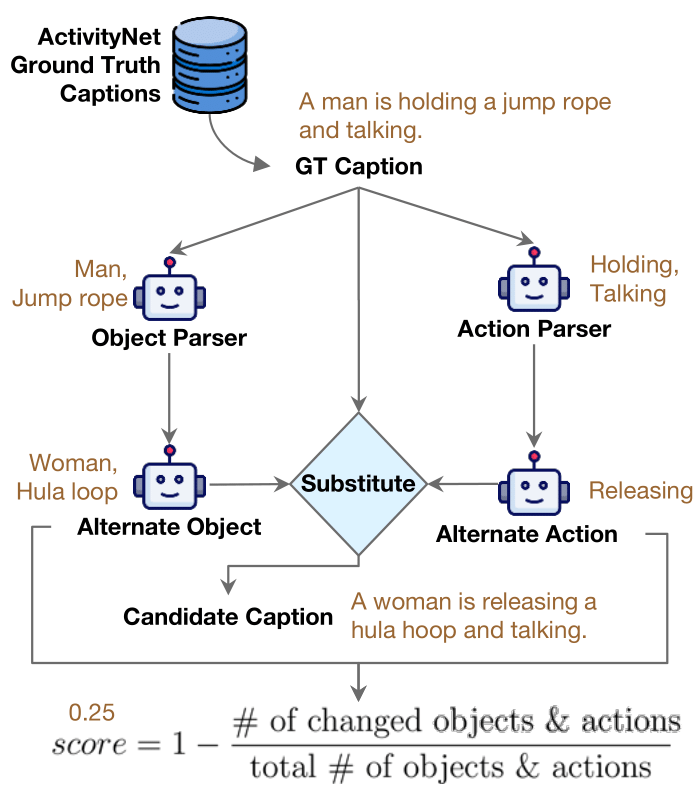

Key Results


Overview: Existing reference-free metrics like EMScore often fail to detect factual inaccuracies and lack consistent scoring. VC-Inspector addresses these limitations by providing factually grounded, interpretable evaluations with quality scores (1-5) and natural language explanations.
Abstract
We propose VC-Inspector, a lightweight, open-source large multimodal model (LMM) for reference-free evaluation of video captions, with a focus on factual accuracy. Unlike existing metrics that suffer from limited context handling, weak factuality assessment, or reliance on proprietary services, VC-Inspector offers a reproducible, fact-aware alternative that aligns closely with human judgments.
To enable robust training and interpretable evaluation, we introduce a systematic approach for generating captions with controllable errors, paired with graded quality scores and explanatory annotations. Our data generation pipeline uses LLMs to systematically alter objects and actions in ground-truth captions, creating the ActivityNet-FG-It dataset with 44K instruction-tuning samples.
Experiments show that VC-Inspector achieves state-of-the-art correlation with human judgments, generalizing across diverse domains (e.g., VATEX-Eval, Flickr8K-Expert, and Flickr8K-CF benchmarks) and revealing the potential for caption improvement. Our 7B model outperforms GPT-4o-based G-VEval while being fully open-source and reproducible.
The Problem: Existing Metrics Fail on Factual Errors
Current reference-free metrics like EMScore produce similar scores for factually correct and incorrect captions, failing to detect object and action errors.
EMScore: Can't distinguish factual errors
VC-Inspector: Detects multiple errors
Our Approach
1. Synthetic Data Generation
We create captions with controllable factual errors:
Scoring formula:
2. VC-Inspector Training
Fine-tune Qwen2.5-VL with LoRA for factual grounding:
Output Format

Data generation pipeline creates synthetic captions with controlled factual errors.

VC-Inspector is trained to predict quality scores with explanations.
Results
VATEX-Eval: Human Correlation (Reference-free)
VC-Inspector outperforms all existing reference-free metrics, including GPT-4o-based G-VEval:
| Metric | Type | Kendall's τb ↑ | Spearman's ρ ↑ |
|---|---|---|---|
| EMScore | Image-based | 22.88 | 29.79 |
| CLIPScore | Image-based | 22.33 | 29.09 |
| ViCLIPScore | Video-based | 30.92 | 39.86 |
| Qwen2.5-VL-3B | Video-based | 31.29 | 36.43 |
| Qwen2.5-VL-7B | Video-based | 34.70 | 39.40 |
| G-VEval (GPT-4o) | Proprietary | 39.40 | - |
| VC-Inspector-3B Ours | Video-based | 37.99 | 42.45 |
| VC-Inspector-7B Ours | Video-based | 42.58 | 45.99 |
Cross-domain: Image Caption Benchmarks
VC-Inspector generalizes to image captions, outperforming even reference-based metrics:
| Metric | Setting | Flickr8K-Expert (τb) | Flickr8K-CF (τb) |
|---|---|---|---|
| SPICE | Reference-based | 51.70 | 24.40 |
| CLIPScore | Reference-based | 52.60 | 36.40 |
| PAC-S | Reference-based | 55.50 | 37.60 |
| CLIPScore | Reference-free | 51.10 | 34.40 |
| PAC-S | Reference-free | 53.90 | 36.00 |
| VC-Inspector-3B | Reference-free | 59.86 | 39.00 |
| VC-Inspector-7B | Reference-free | 63.43 | 45.97 |
Ablation: Impact of Explanations
Training with explanations improves factual grounding:
| Configuration | Kendall's τb | Spearman's ρ |
|---|---|---|
| VC-Inspector-3B (without explanations) | 34.29 | 38.18 |
| VC-Inspector-3B (with explanations) | 37.99 | 42.45 |
Explanation supervision provides +3.7 τb improvement, demonstrating the value of interpretable outputs.
Models & Dataset
Pre-trained Models
All models available on HuggingFace:
| Model | Params | VATEX τb |
|---|---|---|
| VC-Inspector-7B | 7B | 42.58 |
| VC-Inspector-3B | 3B | 37.99 |
Training Configuration
| Hyperparameter | Value |
|---|---|
| Base Model | Qwen2.5-VL |
| Training Method | LoRA (r=32, α=32) |
| Epochs | 1 |
| Batch Size | 128 |
| Learning Rate | 1e-4 |
ActivityNet-FG-It Dataset
Synthetic dataset for instruction tuning:
Data Generation
- Source: ActivityNet Captions (train split)
- Generator: Llama-3.3-70B-Instruct
- Augmentation: Object & action substitution
- Scoring: Embedding similarity + factual accuracy
- Explanations: Identifies incorrect objects/actions
Qualitative Examples
BibTeX
@inproceedings{dipta2026vcinspector,
title={VC-Inspector: Advancing Reference-free Evaluation of Video Captions with Factual Analysis},
author={Shubhashis Roy Dipta and Tz-Ying Wu and Subarna Tripathi},
booktitle={Proceedings of the Association for Computational Linguistics: ACL 2026},
year={2026},
eprint={2509.16538},
archivePrefix={arXiv},
primaryClass={cs.CV},
url={https://arxiv.org/abs/2509.16538},
}